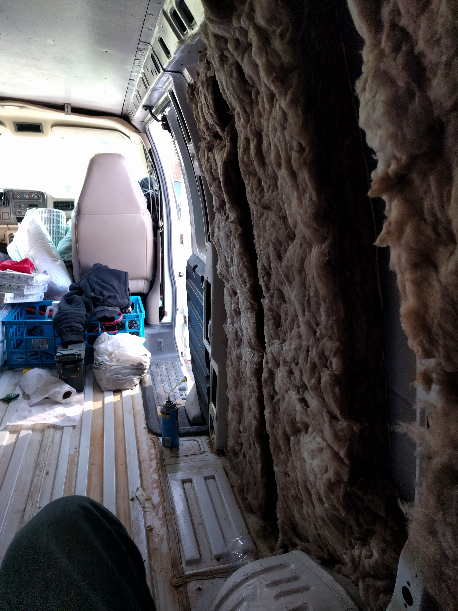

Van build
This is my story of building a van to travel and live out of. You can read some other stories of van setups which I've taken some inspiration from.
Purchasing the van
I got the van from a local dealership. Looking online for over a month across Craigslist and dealerships was frustrating. Either vans were way too new and overpriced, way too old and overpriced or sold for scrap.The van I ended up buying is a 2001 Chevy Express with ~220k miles.
Interior Layout
I want the following in my van: bed, hammock, shelves, fridge and something to hold the solar batteries. Ideally I'd find or make a mini-table to put on the floor and sit under which would let me work, prep food or eat off of.In order to really fit a hammock in lengthwise the bed will need to only be a twin. Otherwise the hammock wouldn't have the free vertical space to hang down properly.
Cleaning, flooring, and insulation
Originally I bought some heavy duty carpet to put overtop of some plywood (and insulation). I read some stories about how getting mold into your carpet was a death spell, so I swapped the carpet for some of the gym flooring. It's a bit spongy, shouldn't get as cold and won't absorb water/spills.After talking with some employees I settled on R-13 insulation. It's pretty thin, but should hold up enough to keep the van interior warm. The van's roof has plywood screwed into it and was a bit hard to take down. The walls were much easier to take down and put insulation against (held temporarily by ducktape).

The first big step though was taking out the flooring which was broken up a bit and starting to rot towards the back of the van. Along the van interior sides was plywood cutout decently against the wheel and wells. Cleaning out the dirt under the flooring just required a shop vac.

Once the van was cleaned up it was easy to grab some plywood and put the insulation against the walls to secure it. I didn't go a fantastic job of covering every inch of the walls. (Let's hope the van stays decently warm.)
Bed Frame
Shelving / Kitchen
Solar Power
Desk Area
- Or just a beanbag chair for now?